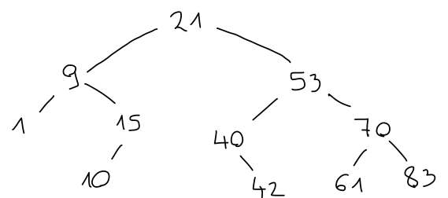

Podatkovni tipi#
Poleg bogatega nabora vgrajenih tipov si tipe v OCamlu lahko definiramo tudi sami.
Okrajšave tipov#
Najenostavnejši način za definicijo tipov so okrajšave obstoječih tipov. Na primer, tip za \(\mathbb{R}^3\) si lahko definiramo kot:
type r3 = float * float * float
type r3 = float * float * float
Tako kot na vgrajena tipa list in option lahko tudi naši tipi vsebujejo parametre:
type 'a zaporedje = int -> 'a
type 'a zaporedje = int -> 'a
Če tip sprejme več parametrov (na primer slovar ima tako tip ključev kot tip vrednosti), jih lahko naštejemo v oklepajih.
type ('k, 'v) slovar = ('k * 'v) list
type ('k, 'v) slovar = ('k * 'v) list
Označba tipov#
Tudi če si definiramo svoj tip, bo OCaml privzeto izračunal najbolj splošni tip:
let vsota_r3 (x1, y1, z1) (x2, y2, z2) =
(x1 +. x2, y1 +. y2, z1 +. z2)
val vsota_r3 :
float * float * float -> float * float * float -> float * float * float =
<fun>
Če želimo vsiliti svoj tip, to na poljubnem vzorcu ali izrazu storimo z označbo (... : tip). Tip rezultata funkcije vsilimo z let ... : tip = ....
let vsota_r3 ((x1, y1, z1) : r3) ((x2, y2, z2) : r3) : r3 =
(x1 +. x2, y1 +. y2, z1 +. z2)
val vsota_r3 : r3 -> r3 -> r3 = <fun>
Alternativni način zgornje označbe je tudi:
let vsota_r3' : r3 -> r3 -> r3 =
fun (x1, y1, z1) (x2, y2, z2) -> (x1 +. x2, y1 +. y2, z1 +. z2)
val vsota_r3' : r3 -> r3 -> r3 = <fun>
Zapisni tipi#
Kompleksna števila predstavimo s pari realnih števil:
type kompleksno = float * float
type kompleksno = float * float
Kako bi izračunali absolutno vrednost kompleksnega števila? Ena možnost je:
let abs (x, y) = sqrt (x ** 2. +. y ** 2.)
val abs : float * float -> float = <fun>
Toda če smo v mislih imeli polarni zapis, je pravilna definicija:
let abs (r, _) = r
val abs : 'a * 'b -> 'a = <fun>
Ali pa datume, ki jih ponavadi predstavimo s trojico celih števil:
type datum = int * int * int
type datum = int * int * int
Kateri vrstni red smo uporabili: dan, mesec, leto, kot smo navajeni v Sloveniji, ali leto, mesec, dan, kot je mednarodni standard? Mogoče celo mesec, dan, leto, kot je navada v Združenih državah?
Definicija zapisnih tipov#
Zmešnjavi se lahko izognemo, če komponente poimenujemo. V OCamlu to storimo z zapisnimi tipi, ki jih podamo tako, da naštejemo imena polj ter njihove tipe:
type kartezicno = {re : float; im : float}
type polarno = {radij : float; kot : float}
type datum = { dan : int; mesec : int; leto : int }
type kartezicno = { re : float; im : float; }
type polarno = { radij : float; kot : float; }
type datum = { dan : int; mesec : int; leto : int; }
Vrednosti tipov pišemo podobno, le da jih podamo z =:
let i = {re = 0.; im = 1.}
let i' = { radij = 1.; kot = 0.}
let osamosvojitev = { dan = 25; mesec = 6; leto = 1991 }
val i : kartezicno = {re = 0.; im = 1.}
val i' : polarno = {radij = 1.; kot = 0.}
val osamosvojitev : datum = {dan = 25; mesec = 6; leto = 1991}
Kljub temu, da zapise pišemo podobno kot Pythonove slovarje, gre za popolnoma različni strukturi. Zapisi so poimenovani kartezični produkti, torej heterogeni, Pythonovi slovarji pa so običajno homogeni, torej so vsi ključi enega in vse vrednosti drugega tipa. Poleg tega imena polj zapisov niso vrednosti, ki bi si jih lahko podajali naokoli.
Razstavljanje zapisov#
Do posameznih komponent dostopamo z zapis.ime_polja:
let abs z = sqrt (z.re ** 2. +. z.im ** 2.)
val abs : kartezicno -> float = <fun>
let abs' z = z.radij
val abs' : polarno -> float = <fun>
let je_prestopno leto =
(leto mod 4 = 0 && leto mod 100 <> 0) || leto mod 400 = 0
let dolzina_meseca leto =
function
| 4 | 6 | 9 | 11 -> 30
| 2 -> if je_prestopno leto then 29 else 28
| _ -> 31
val je_prestopno : int -> bool = <fun>
val dolzina_meseca : int -> int -> int = <fun>
let je_veljaven datum =
let veljaven_dan = 1 <= datum.dan && datum.dan <= dolzina_meseca datum.leto datum.mesec
and veljaven_mesec = 1 <= datum.mesec && datum.mesec <= 12
in
veljaven_dan && veljaven_mesec
val je_veljaven : datum -> bool = <fun>
Včasih je krajše, če zapise razstavimo s pomočjo vzorcev oblike { polje1 = vzorec1; polje2 = vzorec2; … }:
let je_veljaven {dan = d; mesec = m; leto = l} =
let veljaven_dan = 1 <= d && d <= dolzina_meseca l m
and veljaven_mesec = 1 <= m && m <= 12
in
veljaven_dan && veljaven_mesec
val je_veljaven : datum -> bool = <fun>
Če za vzorce uporabimo spremenljivke z enakimi imeni kot polja, lahko uporabimo tudi krajšo obliko:
let je_veljaven {dan = dan; mesec = mesec; leto = leto} =
let veljaven_dan = 1 <= dan && dan <= dolzina_meseca leto mesec
and veljaven_mesec = 1 <= mesec && mesec <= 12
in
veljaven_dan && veljaven_mesec
val je_veljaven : datum -> bool = <fun>
let je_veljaven {dan; mesec; leto} =
let veljaven_dan = 1 <= dan && dan <= dolzina_meseca leto mesec
and veljaven_mesec = 1 <= mesec && mesec <= 12
in
veljaven_dan && veljaven_mesec
val je_veljaven : datum -> bool = <fun>
let abs {re; im} = sqrt (re ** 2. +. im ** 2.)
val abs : kartezicno -> float = <fun>
Če želimo v vzorcu kakšna polja izpustiti, jih nadomestimo z podčrtajem:
let abs' { radij; _ } = radij
val abs' : polarno -> float = <fun>
let je_pred_nasim_stetjem {leto; _} =
leto <= 0
val je_pred_nasim_stetjem : datum -> bool = <fun>
Posodabljanje zapisov#
Z zapisom {zapis with polje1 = vrednost1; …} ustvarimo nov zapis, ki ima z izjemo naštetih vrednosti polja enaka prvotnemu:
let konjugiraj z = {z with im = -. z.im}
val konjugiraj : kartezicno -> kartezicno = <fun>
let pred_sto_leti datum =
{dan = datum.dan; mesec = datum.mesec; leto = datum.leto - 100}
val pred_sto_leti : datum -> datum = <fun>
let pred_sto_leti datum =
{datum with leto = datum.leto - 100}
val pred_sto_leti : datum -> datum = <fun>
Pametni konstruktorji#
Z lastnimi tipi lahko dosežemo tudi strožje preverjanje veljavnosti vrednosti. Napišimo funkcijo naredi_datum, ki vrne datum le, če dani trije argumenti predstavljajo veljaven datum. Takim funkcijam pravimo pametni konstruktorji, saj konstrukcijo vrednosti obogatijo z dodatno logiko.
let naredi_datum dan mesec leto =
let datum = { dan; mesec; leto } in
if je_veljaven datum then Some datum else None
val naredi_datum : int -> int -> int -> datum option = <fun>
naredi_datum 29 2 2000
- : datum option = Some {dan = 29; mesec = 2; leto = 2000}
naredi_datum 29 2 1900
- : datum option = None
Če smo previdni in za konstrukcijo datumov uporabimo le to funkcijo, bodo vsi datumi v našem programu veljavni. Kmalu bomo videli, da nam tudi previden ne bo treba biti, saj bomo uporabo pametnih konstruktorjev tudi vsilili.
Naštevni tipi#
Najzanimivejši tipi, ki jih lahko definiramo, so naštevni tipi. Tako kot pri zapisnih tipih bomo tudi vrednosti naštevnih tipov sestavljali iz manjših vrednosti. Razlika med njimi je v tem, da morajo biti pri zapisnih tipih prisotne vrednosti vseh naštetih polj, mora biti pri naštevnih tipih prisotna natanko ena izmed naštetih variant.
Recimo, da si želimo definirati tip pošiljk iz spletne trgovine. Zaenkrat imena in naslove predstavimo z nizi. Tudi vrsto dostave (osebno, po pošti) bi lahko predstavili z nizi.
type posiljka = {
naslovnik : string;
naslov : string;
dostava : string
}
type posiljka = { naslovnik : string; naslov : string; dostava : string; }
[
{ naslovnik = "Matija Pretnar"; naslov = "5.19"; dostava = "osebni prevzem"};
{ naslovnik = "Katja Berčič"; naslov = "5.07"; dostava = "po pošti"};
{ naslovnik = "Filip Koprivec"; naslov = "P.23"; dostava = "osebno"};
]
- : posiljka list =
[{naslovnik = "Matija Pretnar"; naslov = "5.19"; dostava = "osebni prevzem"};
{naslovnik = "Katja Berčič"; naslov = "5.07"; dostava = "po pošti"};
{naslovnik = "Filip Koprivec"; naslov = "P.23"; dostava = "osebno"}]
Vidimo, da lahko v nize zapišemo karkoli, kar otežuje obdelavo podatkov, pa tudi vodi v nesmisle. Ena možnost je, da dostavo opišemo z logično vrednostjo:
type posiljka = {
naslovnik : string;
naslov : string;
osebni_prevzem : bool
}
type posiljka = {
naslovnik : string;
naslov : string;
osebni_prevzem : bool;
}
[
{ naslovnik = "Matija Pretnar"; naslov = "5.19"; osebni_prevzem = true };
{ naslovnik = "Katja Berčič"; naslov = "5.07"; osebni_prevzem = false };
{ naslovnik = "Filip Koprivec"; naslov = "P.23"; osebni_prevzem = true };
]
- : posiljka list =
[{naslovnik = "Matija Pretnar"; naslov = "5.19"; osebni_prevzem = true};
{naslovnik = "Katja Berčič"; naslov = "5.07"; osebni_prevzem = false};
{naslovnik = "Filip Koprivec"; naslov = "P.23"; osebni_prevzem = true}]
Ta rešitev ni idealna, saj ne vemo, kaj vse implicira vrednost false. Še več: kaj, če bi želeli dodati še tretjo možnost, na primer hitro dostavo? Boljši način je, da uporabimo naštevne tipe.
Definicije naštevnih tipov#
Naštevne tipe podamo tako, da naštejemo možne variante, od katerih je vsaka podana s svojim konstruktorjem.
type dostava =
| OsebniPrevzem
| PoPosti
type posiljka = {
naslovnik : string;
naslov : string;
dostava : dostava
}
type dostava = OsebniPrevzem | PoPosti
type posiljka = { naslovnik : string; naslov : string; dostava : dostava; }
Tedaj bo tip imel natanko dve možni vrednosti in OCaml nas bo opozoril, če poskusimo uporabiti nenavedeno varianto:
[
{ naslovnik = "Matija Pretnar"; naslov = "5.19"; dostava = OsebniPrevzem };
{ naslovnik = "Katja Berčič"; naslov = "5.07"; dostava = PoPosti };
{ naslovnik = "Filip Koprivec"; naslov = "P.23"; dostava = Osebno };
]
File "[34]", line 4, characters 61-67:
4 | { naslovnik = "Filip Koprivec"; naslov = "P.23"; dostava = Osebno };
^^^^^^
Error: This variant expression is expected to have type dostava
There is no constructor Osebno within type dostava
Razstavljanje naštevnih tipov#
Tako kot naštevne tipe podamo po kosih, lahko prek match ali function po kosih tudi definiramo funkcije na njih.
type dostava =
| OsebniPrevzem
| PoPosti
type dostava = OsebniPrevzem | PoPosti
let cena_dostave =
function
| OsebniPrevzem -> 0.
| PoPosti -> 2.5
val cena_dostave : dostava -> float = <fun>
Če tip razširimo z dodatno varianto, nas bo prevajalnik sam opozoril nanjo:
type dostava =
| OsebniPrevzem
| PoPosti
| HitraDostava
type dostava = OsebniPrevzem | PoPosti | HitraDostava
let cena_dostave =
function
| OsebniPrevzem -> 0.
| PoPosti -> 2.5
File "[38]", lines 2-4, characters 2-18:
2 | ..function
3 | | OsebniPrevzem -> 0.
4 | | PoPosti -> 2.5
Warning 8 [partial-match]: this pattern-matching is not exhaustive.
Here is an example of a case that is not matched:
HitraDostava
val cena_dostave : dostava -> float = <fun>
let cena_dostave =
function
| OsebniPrevzem -> 0.
| PoPosti -> 2.5
| HitraDostava -> 4.
val cena_dostave : dostava -> float = <fun>
Konstruktorji z argumenti#
Vsak izmed naštetih konstruktorjev lahko sprejme tudi argumente vnaprej določenega tipa:
type dostava =
| OsebniPrevzem
| PoPosti of string
| HitraDostava of string
type posiljka = {
naslovnik : string;
dostava : dostava
}
type dostava = OsebniPrevzem | PoPosti of string | HitraDostava of string
type posiljka = { naslovnik : string; dostava : dostava; }
HitraDostava "Jadranska ulica 21, 1000 Ljubljana"
- : dostava = HitraDostava "Jadranska ulica 21, 1000 Ljubljana"
type geometrijski_objekt =
| Tocka
| Krog of float
| Pravokotnik of float * float
type geometrijski_objekt =
Tocka
| Krog of float
| Pravokotnik of float * float
let ploscina =
function
| Tocka -> 0.
| Krog r -> 3.14 *. r ** 2.
| Pravokotnik (v, s) -> v *. s
val ploscina : geometrijski_objekt -> float = <fun>
[Tocka; Pravokotnik (1., 2.); Tocka; Krog 3.]
|> List.map ploscina
|> List.fold_left (+.) 0.
- : float = 30.26
Primer naštevnega tipa, ki ga že poznamo, je tip option:
type 'a option = None | Some of 'a
type 'a option = None | Some of 'a
Naštevni tipi z eno samo varianto#
Naštevni tipi so lahko koristni tudi takrat, ko imajo samo eno varianto, saj s tem lahko ločimo vrednosti, ki so predstavljene z istim osnovnim tipom. Recimo, tako naslove kot telefonske številke lahko predstavimo z nizi. Vendar če za dve vrsti vrednosti uporabljamo isti tip, lahko to vodi do zmešnjave, kakršna se je zgodila mestecu Gold Hill.
Če pa definiramo dva različna naštevna tipa, bo na to namesto nas pazil prevajalnik:
type naslov = Naslov of string
type telefon = Telefon of string
type dostava =
| OsebniPrevzem
| PoPosti of naslov
| HitraDostava of naslov * telefon
type posiljka = {
naslovnik : string;
dostava : dostava
}
type naslov = Naslov of string
type telefon = Telefon of string
type dostava =
OsebniPrevzem
| PoPosti of naslov
| HitraDostava of naslov * telefon
type posiljka = { naslovnik : string; dostava : dostava; }
{ naslovnik = "Matija Pretnar";
dostava = HitraDostava (
Telefon "01 4766 600",
Naslov "Jadranska 21"
)}
File "[47]", line 3, characters 4-11:
3 | Telefon "01 4766 600",
^^^^^^^
Error: This variant expression is expected to have type naslov
There is no constructor Telefon within type naslov
Če ima naštevni tip samo eno varianto, nam ni treba uporabljati konstrukta match, ampak lahko vzorec uporabimo neposredno v funkciji:
let je_v_ljubljani (Telefon stevilka) =
String.sub stevilka 0 2 = "01"
val je_v_ljubljani : telefon -> bool = <fun>
Algebrajski tipi#
Naštevni tipi so lahko tudi rekurzivni. Takim tipom pravimo algebrajski, v nekaterih primerih, ki jih bomo spoznali kasneje, pa tudi induktivni.
Naravna števila#
Najenostavnejši primer induktivnega tipa so naravna števila. Predstavimo jih z naštevnim tipom s konstruktorjema Nic in Naslednik, pri čemer slednji sprejme en argument, ki je zopet naravno število.
type naravno =
| Nic
| Naslednik of naravno
type naravno = Nic | Naslednik of naravno
Vsoto naravnih števil podamo z običajno rekurzivno definicijo:
let rec vsota m n =
match m with
| Nic -> n
| Naslednik m' -> Naslednik (vsota m' n)
val vsota : naravno -> naravno -> naravno = <fun>
let ena = Naslednik Nic
let dva = vsota ena ena
let stiri = vsota dva dva
let sest = vsota stiri dva
val ena : naravno = Naslednik Nic
val dva : naravno = Naslednik (Naslednik Nic)
val stiri : naravno = Naslednik (Naslednik (Naslednik (Naslednik Nic)))
val sest : naravno =
Naslednik (Naslednik (Naslednik (Naslednik (Naslednik (Naslednik Nic)))))
vsota sest sest
- : naravno =
Naslednik
(Naslednik
(Naslednik
(Naslednik
(Naslednik
(Naslednik
(Naslednik
(Naslednik (Naslednik (Naslednik (Naslednik (Naslednik Nic)))))))))))
Verižni seznami#
Še en znan primer induktivnega tipa so verižni seznami. Vsak seznam je bodisi prazen, bodisi sestavljen iz glave in repa:
type 'a seznam =
| Prazen
| Sestavljen of 'a * 'a seznam
type 'a seznam = Prazen | Sestavljen of 'a * 'a seznam
Sedaj tudi vidimo, zakaj :: lahko uporabljamo v vzorcih - ni namreč običajna funkcija za sestavljanje seznamov, temveč konstruktor tipa seznamov.
Aritmetični izrazi#
Induktivne tipe se pogosto uporablja za predstavitev izrazov določenega formalnega jezika. Na primer, aritmetične izraze gradimo iz števil ter aritmetičnih operacij. Take izraze bi lahko predstavili s tipom:
type izraz =
| Stevilo of int
| Plus of izraz * izraz
| Minus of izraz
| Krat of izraz * izraz
type izraz =
Stevilo of int
| Plus of izraz * izraz
| Minus of izraz
| Krat of izraz * izraz
Na primer, izrazu \(-(5 \times (2 + 7))\) bi ustrezala vrednost
let i = Minus (
Krat (Stevilo 5, Plus (Stevilo 2, Stevilo 7))
)
val i : izraz = Minus (Krat (Stevilo 5, Plus (Stevilo 2, Stevilo 7)))
Za vajo lahko napišete rekurzivno funkcijo izracunaj : izraz -> int, ki dani izraz prevori v njegovo vrednost. Na primer, za zgornji izraz bi funkcija vrnila -45.
Dvojiška drevesa#
Še en induktivni tip, ki ga bomo podrobneje spoznali v kratkem, pa so dvojiška drevesa. Dvojiško drevo je bodisi prazno bodisi ima koren, v katerem je shranjena vrednost, ter dva otroka, ki sta zopet drevesi, na primer (pri čemer praznih dreves ne kažemo):

Tip dvojiških dreves podamo s tipom
type 'a drevo =
| Prazno
| Sestavljeno of 'a drevo * 'a * 'a drevo
type 'a drevo = Prazno | Sestavljeno of 'a drevo * 'a * 'a drevo
Vaje#
Valute#
Pri modeliranju denarja ponavadi uporabljamo racionalna števila. Problemi se pojavijo, ko uvedemo različne valute. Oglejmo si dva pristopa k izboljšavi varnosti pri uporabi valut.
Definirajte tipa euro in dollar, kjer ima vsak od tipov zgolj en konstruktor, ki sprejme racionalno število. Nato napišite funkciji euro_to_dollar in dollar_to_euro, ki primerno pretvarjata valuti (točne vrednosti pridobite na internetu ali pa si jih izmislite).
Namig: Občudujte informativnost tipov funkcij.
let primer_valute_1 = dollar_to_euro (Dollar 0.5)
val primer_valute_1 : euro = Euro 0.4305
Definirajte tip currency kot en vsotni tip z konstruktorji za jen, funt in švedsko krono. Nato napišite funkcijo to_pound, ki primerno pretvori valuto tipa currency v funte.
Namig: V tip dodajte še švicarske franke in se navdušite nad dejstvom, da vas Ocaml sam opozori, da je potrebno popraviti funkcijo to_pound.
let primer_valute_2 = to_pound (Yen 100.)
val primer_valute_2 : currency = Pound 0.700000000000000067
Mešani seznami#
Želimo uporabljati sezname, ki hranijo tako cela števila kot tudi logične vrednosti. To bi lahko rešili tako da uvedemo nov tip, ki predstavlja celo število ali logično vrednost, v nadaljevanju pa bomo raje konstruirali nov tip seznamov.
Spomnimo se, da lahko tip list predstavimo s konstruktorjem za prazen seznam Nil(oz. [] v Ocamlu) in pa konstruktorjem za člen Cons(x, xs) (oz. x :: xs v Ocamlu).
Definirajte tip intbool_list z konstruktorji za:
prazen seznam,
člen s celoštevilsko vrednostjo,
člen z logično vrednostjo.
Nato napišite testni primer, ki bi predstavljal [5; true; false; 7].
Funkcija intbool_map f_int f_bool ib_list preslika vrednosti ib_list v nov intbool_list seznam, kjer na elementih uporabi primerno od funkcij f_int oz. f_bool.
Funkcija intbool_reverse obrne vrstni red elementov intbool_list seznama. Funkcija je repno rekurzivna.
Funkcija intbool_separate ib_list loči vrednosti ib_list v par list seznamov, kjer prvi vsebuje vse celoštevilske vrednosti, drugi pa vse logične vrednosti. Funkcija je repno rekurzivna in ohranja vrstni red elementov.
Čarodeji#
Določeni ste bili za vzdrževalca baze podatkov za svetovno priznano čarodejsko akademijo “Effemef”. Vaša naloga je konstruirati sistem, ki bo omogočil pregledno hranjenje podatkov.
Čarodeje razvrščamo glede na vrsto magije, ki se ji posvečajo. Definirajte tip magic, ki loči med magijo ognja, magijo ledu in magijo arkane oz. fire, frost in arcane. Ko se čarodej zaposli na akademiji, se usmeri v zgodovino, poučevanje ali raziskovanje oz. historian, teacher in researcher. Definirajte tip specialisation, ki loči med temi zaposlitvami.
Vsak od čarodejev začne kot začetnik, nato na neki točki postane študent, na koncu pa SE lahko tudi zaposli. Definirajte tip status, ki določa ali je čarodej:
začetnik
Newbie,študent
Student(in kateri vrsti magije pripada in koliko časa študira),zaposlen
Employed(in vrsto magije in specializacijo).
Nato definirajte zapisni tip wizard z poljem za ime in poljem za trenuten status ter dodajte primer professor, ki je zaposlen učitelj magije ognja, in jaina, ki je četrto leto študentka magije ledu.
Želimo prešteti koliko uporabnikov posamezne od vrst magije imamo na akademiji. Definirajte zapisni tip magic_counter, ki v posameznem polju hrani število uporabnikov magije. Nato definirajte funkcijo update counter magic, ki vrne nov števec s posodobljenim poljem glede na vrednost magic.
let primer_carovniki_1 = update {fire = 1; frost = 1; arcane = 1} Arcane
val primer_carovniki_1 : magic_counter = {fire = 1; frost = 1; arcane = 2}
Funkcija count_magic sprejme seznam čarodejev in vrne števec uporabnikov različnih vrst magij.
let primer_carovniki_2 = count_magic [professor; professor; professor]
val primer_carovniki_2 : magic_counter = {fire = 3; frost = 0; arcane = 0}
Želimo poiskati primernega kandidata za delovni razpis. Študent lahko postane zgodovinar po vsaj treh letih študija, raziskovalec po vsaj štirih letih študija in učitelj po vsaj petih letih študija. Funkcija find_candidate magic specialisation wizard_list poišče prvega primernega kandidata na seznamu čarodejev in vrne njegovo ime, čim ustreza zahtevam za specialisation in študira vrsto magic. V primeru, da ni primernega kandidata, funkcija vrne None.
let primer_carovniki_3 =
find_candidate Frost Researcher [professor; jaina]
val primer_carovniki_3 : string option = Some "Jaina"